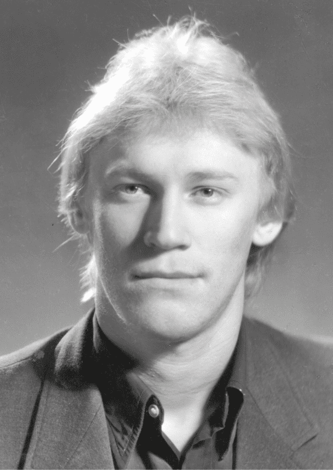

Биография
Александр Васильевич Кузнецов (1962–2021) – сельский учитель и выдающийся краевед из деревни Усть-Печеньга Тотемского района. Он стал заметной фигурой в изучении истории и культуры Вологодчины и Русского Севера. Несмотря на скромность, Кузнецов был признан Почётным гражданином района и оставил значительное научное и художественное наследие.
Родился в деревне Фоминское. Ранний интерес к истории, топонимике и народной культуре зародился под влиянием семьи и деревенской бабушки. Вдохновлённый книгами и краеведами, он начал записывать предания, интересоваться картами и писать статьи уже в школьные годы.
Поступив на геофак Вологодского педвуза, активно сотрудничал с газетами, стал членом Географического общества СССР. Однако вместо академической карьеры выбрал работу в сельской школе. В Усть-Печеньге он не только преподавал множество дисциплин, но и был организатором кружков, редактором школьной газеты, инициатором экспедиций.
Параллельно он публиковал книги по топонимике, истории, этнографии. Его труды выходили небольшими тиражами, часто за собственный счёт. Особенно известны: «Язык земли Вологодской», «Корни тотемских фамилий», «Болванцы на Лысой Горе», «Легенды, предания и были Тотемского уезда». Он создавал авторские иллюстрации и экслибрисы, участвовал в выставках.
Кузнецов активно вёл полемику на краеведческие и общественные темы, не боялся критиковать как церковные, так и государственные институты. Он видел Россию светской, но национально ориентированной страной.
Скончался в 2021 году после тяжёлой болезни. Его труды стали основой интернет-библиотеки и ряда музейных выставок.